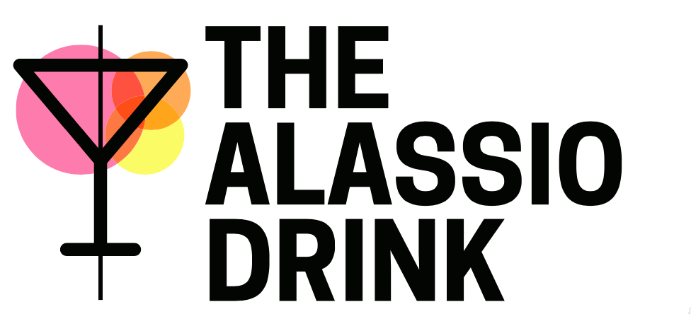
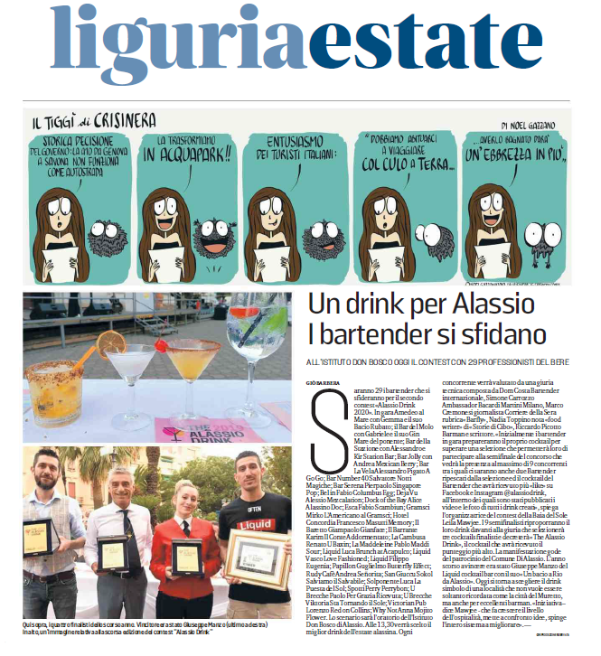
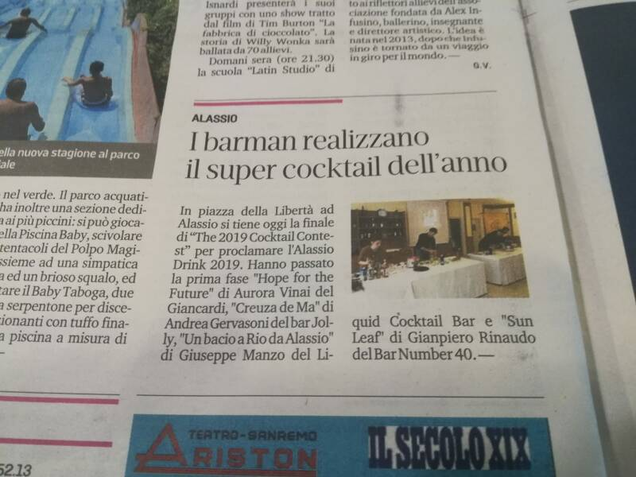
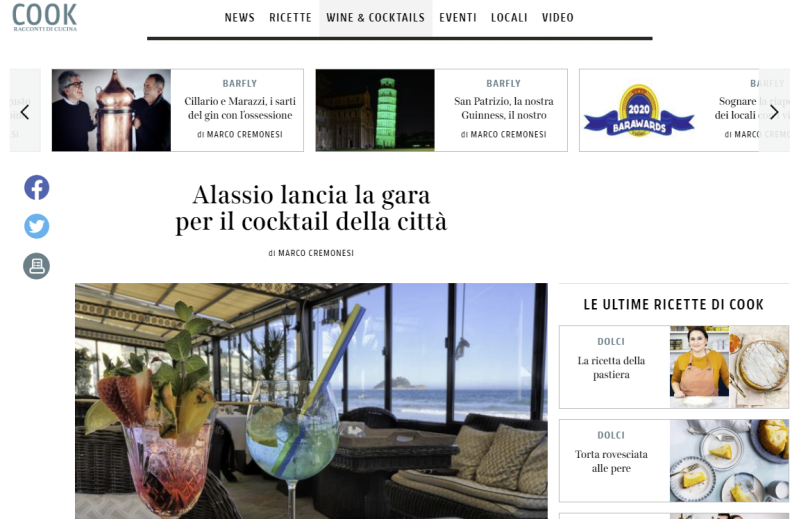
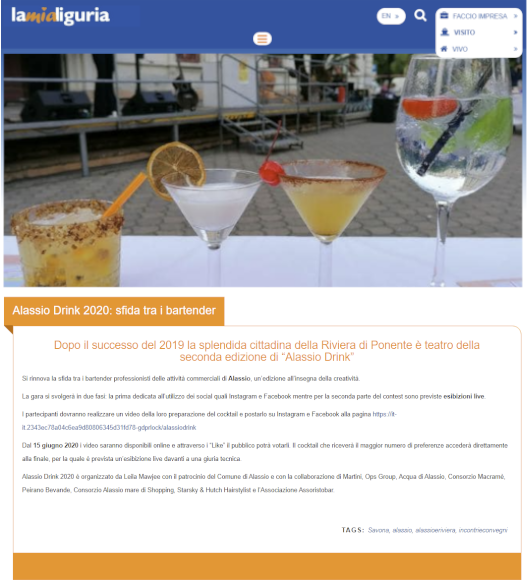
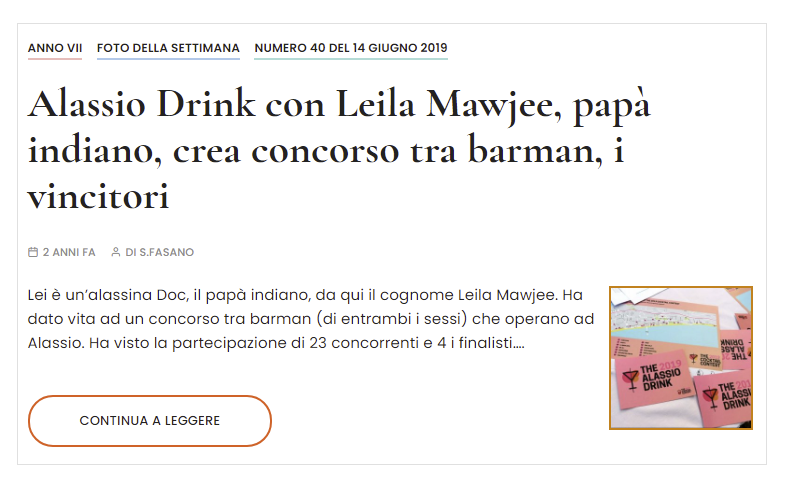
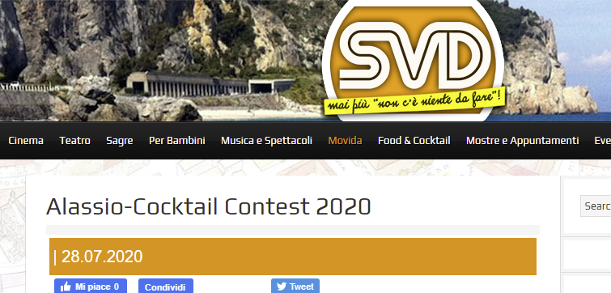

2019
La prima edizione. Finale il 7 giugno in Piazza della Libertà: vince Giuseppe Manzo (Liquido cocktail bar) con «Un bacio a Rio».
La prima volta

Un cocktail ideato e creato dai barman e dalle barmaid di Alassio, attraverso The Cocktail Contest. Coinvolgendo residenti, turisti e una giuria, elegge il drink che si fregia del nome Alassio Drink.
Come un vino può appartenere alla sua terra — il Barolo ad Alba, il Prosecco a Conegliano — così un cocktail può diventare parte dell'identità di un luogo. Da qui l'idea di eleggere il drink simbolo di Alassio: una gara tra barman, votata dal pubblico e da una giuria di esperti, con il premio più ambito — la piastrella firmata sul celebre Muretto di Alassio.

La prima edizione. Finale il 7 giugno in Piazza della Libertà: vince Giuseppe Manzo (Liquido cocktail bar) con «Un bacio a Rio».
La prima volta
Il contest torna il 28 luglio all'Istituto Salesiano Don Bosco: selezioni, finalisti e la battle finale davanti alla giuria.
La battle
Protagonista l'amaro: sponsor la Distilleria Bepi Tosolini e Martini & Rossi. Due fasi, social + finale live all'Hotel Regina.
L'anno dell'amaro«Sempre più in alto»: il 2 maggio la finale sulla Terrazza Martini a Milano, con voto del pubblico via QR code.
A Milano«La notizia è che Alassio avrà il suo drink. Un cocktail tutto suo, scelto a furor di popolo.»
— dalla rassegna stampa dell'edizione 2019





